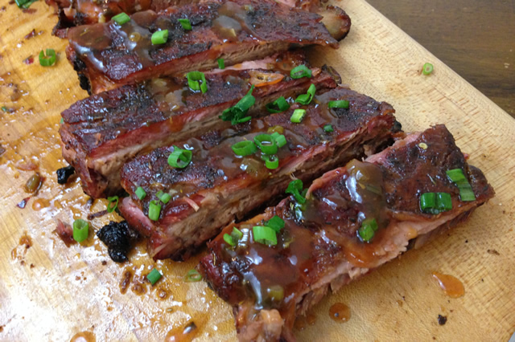

Jamaican Jerk Ribs

Tender St. Louis-style ribs with a kick of Jamaican jerk sauce
Ingredients
for the jerk sauce:
- yields 1 quart
- 1 ounce of fresh thyme, minced
- 2 binches scallions, roots removed, green and whites thinly sliced
- 3 ounces hot peppers, stem reamoved, minced, leave the seeds unless it's too hot for you
- 2 ounces dark rum
- juice and zest of 2 limes
- 1 cup canola oil 6 tablespoons brown sugar
- 2 tablespoons salt
- 2 tablespoons whole allspice berries, crushed or freshly ground
- 1" piece fresh ginger, peeled and grated on Microplane
ingredients and tools:
- 4 racks St. Louis cut ribs
- Jamaican jerk sauce marinade
- heavy duty aluminum foil
- smoker
- wood for smoker
- grill tongs
Directions
- First, make the jerk sauce. In a large bowl, combine thyme, scallions, and peppers and ix well. Add the rum, lime juice, and canola oil. Combine the sugar, salt, allspice, and lime zest and mix well. Add to the first bowl. You can keep the marinade this texture or add 1 cup water and blend in a blender if you want more of a sauce consistency.
- Marinate the ribs in jerk sauce for 48 Hours. Start the fire and bring the smoker to 250º F. Cook the ribs meat side up for about 4.5 hours or until you can pick up the rack of ribs with tongs and they start to crack but not break.
- Wrap the ribs in aluminum foil to rest. Before severing, finish them on the grill and garnish with scallions.